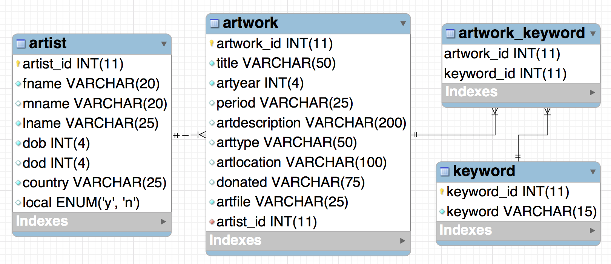

Note: The weekly Teaching Notes only identify week-specific
considerations. Please refer to the General Teaching Notes for
repeating course facilitation expectations.
Week 05 Outcomes
Design and create a simple database
Explain the first 3 normal forms
Distinguish the difference between entities and attributes
Demonstrate the relationships between entities
Before the Week Begins
Students will go over preparation materials and complete the preparation check before the first class of the
week.
The students should have completed the preparation materials and check before the first class of the week
and be ready for learning, activities, and discussions.
Pick some of the student examples from last week's assignment submissions and go over them with the class.
Or you could also pick a few students, ahead of time, to present their ERD to the class.
Mid-week
Have them complete their quiz by themselves once and then with others for the second attempt. The
discussions and debates during the second attempt as a group is a great 'teach one another' activity.
The two scores will be averaged for their final quiz score.
Let the groups design the movie ERD on their own. Give them some introduction like the following video.
Once the groups are done giving it a try go over some topics like the following video.
End of the Week
The homework due Saturday (W05- Design the Art DB) will be an image of the art ERD that they will create.
Grading/Feedback
Instructor: The check and quiz are auto-graded. The homework will be checking their art ERD.
Below is the one I came up with. Notice that the dob and dod years are integers. This is because the range of
the years accepted in the Year datatype range from 1901 to 2155. Many of the artist were born and died before
1901. See rubrics for grading.

Looking Ahead
Remind students that they have readings and videos to watch and a check to complete before the first class of
the week to be prepared for the next week.